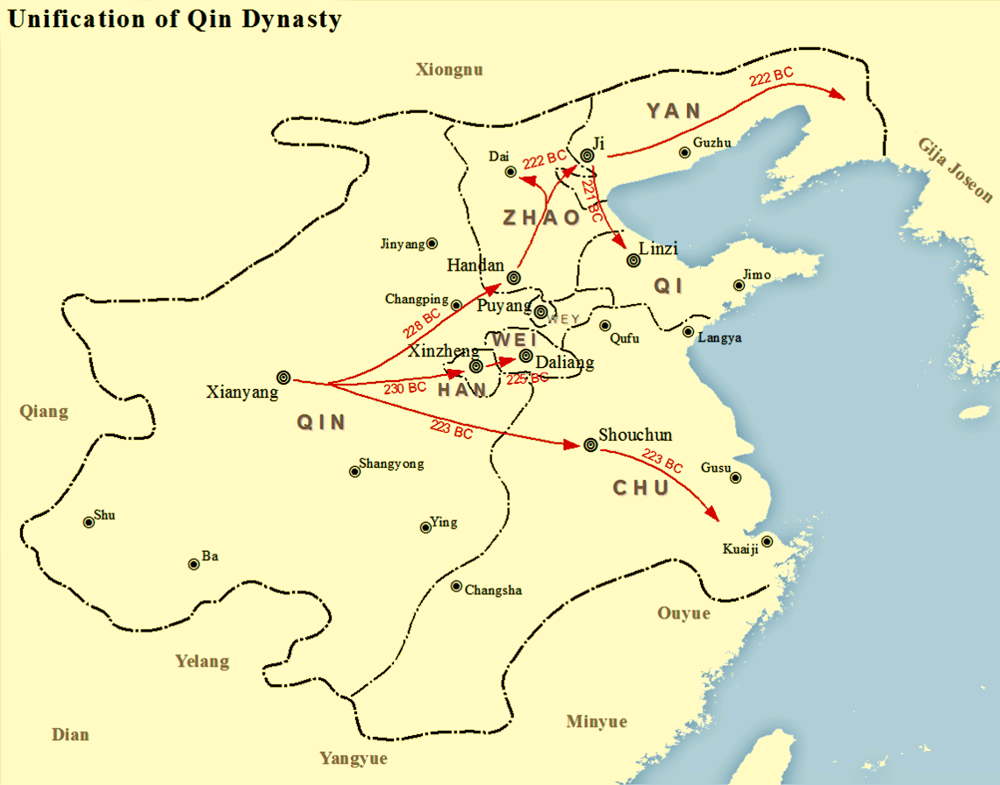
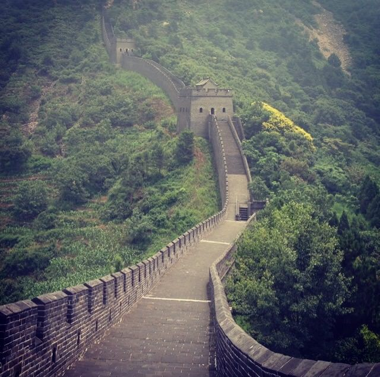
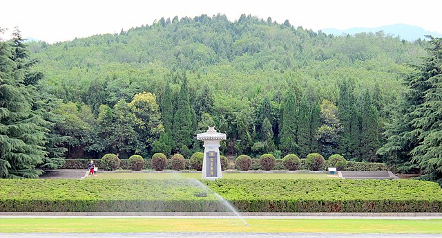

My work

Conquered the six other Chinese kingdoms during the warring states period and unified China in 221.

Constructed the original Great Wall of China to protect against northern invasions.

Constructed the tomb of Qin Shi Huang, which has still not been fully excavated.